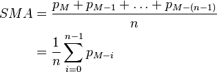

CIOS Finance：移动平均线
目录
- 简介
- 计算方式
- 加速计算演算法
- 使用方法
简介
移动平均（英语：Moving
Average，MA），又称「移动平均线」简称均线，是技术分析中一种分析时间序列数据的工具。最常见的是利用股价、回报或交易量等变数计算出移动平
均。
移动平均可抚平短期波动，反映出长期趋势或周期。数学上，移动平均可视为一种卷积。
「移动平均线」有很多种应用变化，主要如下：
- 简单移动平均（Simple Moving Average，SMA）
- 累进移动平均（Cumulative Moving Average，CMA）
- 加权移动平均（Weighted Moving Average，WMA）
- 指数移动平均（Exponential Moving Average，EMA或EWMA）
- 平滑移动平均（Smoothed Moving Average，SMMA）
- 交易量加权移动平均（Volume Weighting Moving
Average，VWMA）
除此以外，还可以有其他种类的「移动平均」计算方式。
在这个开发的版本上，「移动平均」的计算并不受限于报价，指标亦可以使用。
计算方式
简单移动平均

累进移动平均
加权移动平均
指数移动平均
平滑移动平均
交易量加权移动平均
加速计算演算法
使用方法
Kurrency FOREX Inc.,
Neutrino International Inc. 2001~2016